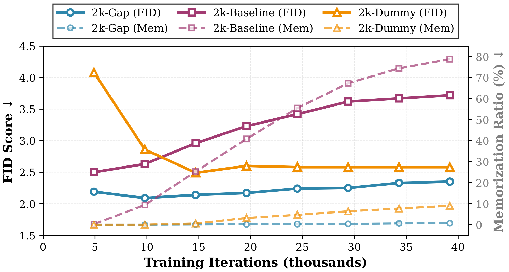

Back to intermediate stage

Removing danger zone could mitigate memorization
On the 2k CIFAR-10 car subset, 2k-Gap simply skips the medium-noise band \(\sigma \in [1, 5]\). If that band is really where memorization is learned, memorization should fall without wrecking FID.
Figure 4 · Training outcome
2k CIFAR-10 cars
skip \(\sigma \in [1, 5]\)
track FID + memorization

Experiment in one glance
This asks whether the danger zone is causal, not just correlated with memorization.
Setup
EDM on 2k CIFAR-10 cars, trained for 40k iterations and read at 8 checkpoints.
Compare
2k-Baseline, 2k-Dummy, and our 2k-Gap schedule.
Idea
Skip the middle band and see whether memorization drops while FID stays good.
Figure 8 intuition · danger zone